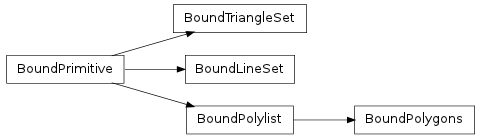

Bases: collada.primitive.BoundPrimitive
A triangle set bound to a transform matrix and materials mapping.

Create a bound triangle set from a triangle set, transform and material mapping. This gets created when a triangle set is instantiated in a scene. Do not create this manually.
Methods
| __init__(ts, matrix, materialnodebysymbol) | Create a bound triangle set from a triangle set, transform and material mapping. |
| generateNormals() | If normals is None or you wish for normals to be |
| shapes() | Iterate through all the triangles contained in the set. |
| triangles() | Iterate through all the triangles contained in the set. |
Attributes
| normal | Read-only numpy.array of size Nx3 where N is the number of normal values in the |
| normal_index | Read-only numpy.array of size Nx3 where N is the number of vertices in the primitive. |
| texcoord_indexset | Read-only tuple of texture coordinate index arrays. |
| texcoordset | Read-only tuple of texture coordinate arrays. |
| vertex | Read-only numpy.array of size Nx3 where N is the number of vertex points in the |
| vertex_index | Read-only numpy.array of size Nx3 where N is the number of vertices in the primitive. |
Read-only numpy.array of size Nx3 where N is the number of normal values in the primitive’s normal source array. The values will be transformed according to the bound transformation matrix.
Read-only numpy.array of size Nx3 where N is the number of vertices in the primitive. To get the actual normal values, one can use this array to select into the normals array, e.g. normal[normal_index]. The values will be transformed according to the bound transformation matrix.
Read-only tuple of texture coordinate index arrays. Each value is a numpy.array of size Nx2 where N is the number of vertices in the primitive. To get the actual texture coordinates, one can use the array to select into the texcoordset array, e.g. texcoordset[0][texcoord_indexset[0]] would select the first set of texture coordinates. The values will be transformed according to the bound transformation matrix.
Read-only tuple of texture coordinate arrays. Each value is a numpy.array of size Nx2 where N is the number of texture coordinates in the primitive’s source array. The values will be transformed according to the bound transformation matrix.
Read-only numpy.array of size Nx3 where N is the number of vertex points in the primitive’s vertex source array. The values will be transformed according to the bound transformation matrix.
Read-only numpy.array of size Nx3 where N is the number of vertices in the primitive. To get the actual vertex points, one can use this array to select into the vertex array, e.g. vertex[vertex_index]. The values will be transformed according to the bound transformation matrix.
Iterate through all the triangles contained in the set.
| Return type: | generator of collada.triangleset.Triangle |
|---|
Iterate through all the triangles contained in the set.
| Return type: | generator of collada.triangleset.Triangle |
|---|
If normals is None or you wish for normals to be recomputed, call this method to recompute them.